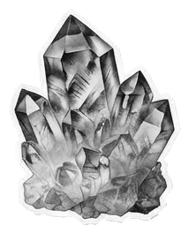

06 / 09 · World · Far orbit
A distinction
Not every useful product needs a fandom.
World-building means a coherent context people can join. Not manufactured loyalty.
Ask: what could people contribute that you couldn’t make alone?

Plate 06 · r = 3 · coherence, not loyalty